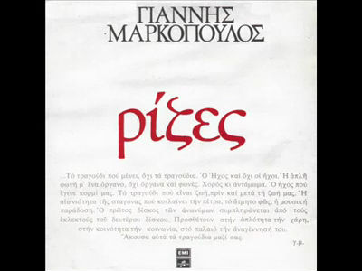
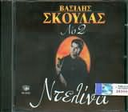
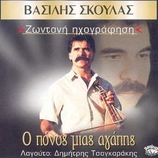

Η ΣΤΡΑΤΑ ΤΟΥ ΡΕΘΕΜΝΟΥ 1972 (ΖΩΝΤΑΝΑ ΗΡΑΚΛΕΙΟ)
- Η ΣΤΡΑΤΑ ΤΟΥ ΡΕΘΥΜΝΟΥ 8:35
- Η ΛΕΒΕΝΤΙΑ 'ΝΑΙ ΜΙΑ ΠΛΗΓΗ 7:15
- ΕΙΝΑΙ ΕΠΙΣΤΗΜΗ ΝΑ ΞΕΡΕΙΣ Ν' ΑΓΑΠΑΣ 6:19
- ΔΕ ΖΕΙ ΤΟ ΨΑΡΙ ΣΤΗ ΣΤΕΡΙΑ 6:31
- ΓΚΡΕΜΙΣΕΣ ΤΗΝ ΑΓΑΠΗ ΜΑΣ 3:06
- ΔΕΝ ΘΕΛΕΙ Ο ΧΩΡΙΣΜΟΣ ΓΙΑΤΡΟΥΣ 3:10
- ΠΟΣΟ ΑΡΓΟΥΝΕ ΟΙ ΣΤΙΓΜΕΣ 3:19
Η ΖΑΡΑ - 1976

ΡΙΖΕΣ - ΓΙΑΝΝΗ ΜΑΡΚΟΠΟΥΛΟΥ - 1976 (ΣΥΜΜΕΤΟΧΗ)
- Σαράντα παλικάρια -Χαλκιάς Λάκης 3:38
- Τώρα τα πουλιά - Λαβίνα Βασιλική 5:00
- Ιτιά - Κλωναρίδης Ηλίας 1:57
- Σου είπα μάνα - Τσίρου Γιούλη 4:33
- Μες του Μαγιού τις μυρωδιές - Σκουλάς Βασίλης 1:53
- Ένας αϊτός - Καρακώστας Χρήστος 3:00
- Καλαματιανός χορός - Ορχηστρικό 3:03
- Όσα βουνά κι αν πέρασα - Καρακώστας Χρήστος 4:27
ΡΙΖΙΤΙΚΑ - ΣΚΟΥΛΑΣ ΒΑΣΙΛΗΣ
- ΠΟΤΕ ΘΑ ΚΑΝΕΙ ΞΑΣΤΕΡΙΑ 3:08
- ΑΓΡΙΜΙΑ ΚΙ ΑΓΡΙΜΑΚΙΑ ΜΟΥ 3:20
- ΤΟΝ ΑΝΔΡΕΙΩΜΕΝΟ ΜΗΝ ΤΟΝ ΚΛΑΙΣ 2:39
- ΜΑΝΑ ΚΙ ΑΝ ΈΡΘΟΥΝ ΟΙ ΦΙΛΟΙ ΜΑΣ 4:52
- ΧΙΤΛΕΡ ΝΑ ΜΗΝ ΤΟ ΚΑΥΧΗΘΕΙΣ 3:03
- ΑΕΤΟΣ 4:21
- ΧΡΙΣΤΕ ΝΑ 'ΣΟΥΣΑΝ ΟΙ ΦΥΛΑΚΕΣ 3:35
- ΚΡΗΤΗ ΚΟΡΩΝΑ ΤΟΥ ΓΙΑΛΟΥ 5:42
ΣΕΡΓΙΑΝΙΣΜΑ ΣΤΗΝ ΚΡΗΤΗ 1980
- ΧΑΙΡΕΤΙΣΜΟΙ 4:33
- ΖΑΧΑΡΟΖΥΜΩΜΕΝΗ ΜΟΥ 3:07
- ΕΓΩ ΜΙΚΡΗ ΜΟΥ Σ ΑΓΑΠΩ 2:50
- ΑΝΑΘΕΜΑ ΣΕ ΛΟΓΙΣΜΕ 3:34
- ΠΡΩΤΟΚΟΠΕΛΑ ΤΟΥ ΧΩΡΙΟΥ 3:07
- ΚΑΙΝΟΥΡΓΙΑ ΆΝΟΙΞΗ 3:35
- ΑΕΤΟΣ 3:14
- ΡΟΖΟΝΑΡΙΣΜΑΤΑ 4:04
Η ΝΤΕΛΙΝΑ Νο 1
- ΧΣΑΝ ΤΟ ΠΕΤΥΧΩ ΤΟ ΚΛΑΔΙ
- ΠΛΗΓΗ ΠΟΥ ΔΕ ΘΑ ΓΕΙΑΝΕΙ
- ΣΤΕΦΑΝΙ ΔΕ ΘΑ ΔΕΙ
- ΕΝΑΣ ΑΕΤΟΣ
- ΠΕΝΤΟΖΑΛΗΣ
- ΟΤΑΝ ΚΑΝΕΙΣ ΠΡΟΣΜΕΝΕΙ
- ΜΕΤΑΝΙΩΜΟΣ ΔΕΝ ΩΦΕΛΕΙ
- ΣΤΗΝ ΑΓΚΑΛΙΑ ΣΟΥ ΜΙΑ ΒΡΑΔΙΑ
- ΝΑ ΒΓΑΖΕΙΣ ΚΑΙ ΤΗ ΦΥΡΑ
- ΕΝΑ ΦΤΩΧΟ ΧΑΜΟΓΕΛΟ
- ΣΔΕ ΘΕΛΕΙ Ο ΧΩΡΙΣΜΟΣ ΓΙΑΤΡΟΥΣ
- Η ΝΤΕΛΙΝΑ
- ΔΩΣΕ ΚΑΙ ΠΑΡΕ ΧΑΔΙΑ
- ΔΕ ΖΕΙ ΤΟ ΨΑΡΙ ΣΤΗ ΣΤΕΡΙΑ

Η ΝΤΕΛΙΝΑ Νο 2
- ΘΑ ΚΑΝΩ ΜΕΤΑΜΟΣΧΕΥΣΗ (ΣΥΡΤΟΣ)
- ΝΤΕΛΙΝΑ (ΣΥΡΤΟΣ)
- ΓΚΡΕΜΙΣΕΣ ΤΗΝ ΑΓΑΠΗ ΜΑΣ (ΣΥΡΤΟΣ)
- ΑΝΑΚΑΛΥΨΑΝΕ ΤΗ ΦΩΛΙΑ (ΚΟΝΤΙΛΙΕΣ)
- ΠΟΣΟ ΑΡΓΟΥΝΕ ΟΙ ΣΤΙΓΜΕΣ (ΣΥΡΤΟΣ)
- ΖΕΥΓΑΡΙΑ ΣΤΕΛΝΩ ΤΑ ΠΟΥΛΙΑ (ΚΟΝΤΙΛΙΕΣ)
- ΕΝΑΣ ΑΕΤΟΣ ΣΤΗ ΘΥΕΛΛΑ (ΡΙΖΙΤΙΚΟΣ ΣΥΡΤΟΣ)
- ΒΑΣΙΛΙΣΣΑ ΤΟΥ ΜΙΝΩΑ (ΣΥΡΤΟΣ)
- ΟΥΤΕ ΚΟΠΕΛΙ ΔΥΟ ΧΡΟΝΩΝ (ΣΥΡΤΟΣ)
- ΟΤΑΝ ΖΥΓΙΑΖΕΙΣ ΤΗ ΧΑΡΑ (ΣΥΡΤΟΣ)
- Η ΠΕΡΑΣΜΕΝΗ ΜΟΥ ΖΩΗ (ΚΟΝΤΗΛΙΕΣ)
- ΣΚΛΗΡΟΣ Ο ΔΡΟΜΟΣ ΤΗΣ ΖΩΗΣ (ΚΟΝΤΗΛΙΕΣ)
- ΧΡΙΣΤΕ ΝΑ ΣΠΟΥΣΑΝ ΟΙ ΦΥΛΑΚΕΣ (ΡΙΖΙΤΙΚΟ ΣΥΡΤΟ)
- ΜΑΛΕΒΙΖΙΩΤΙΚΟΣ
